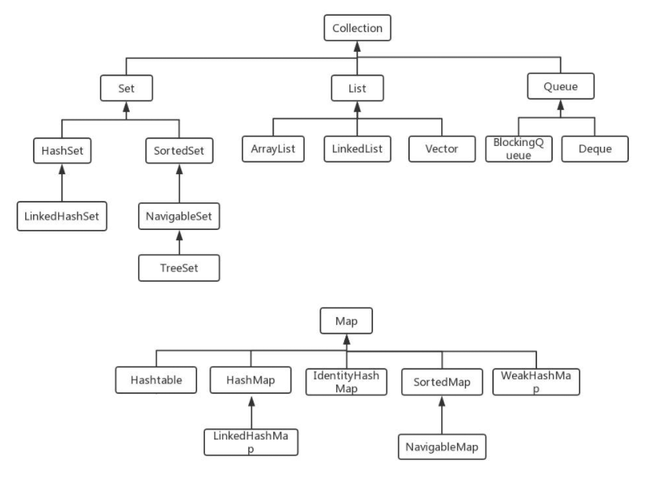
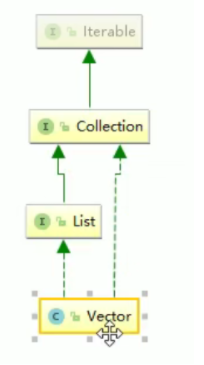
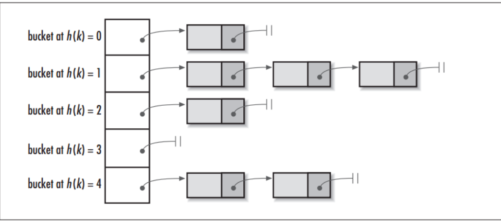
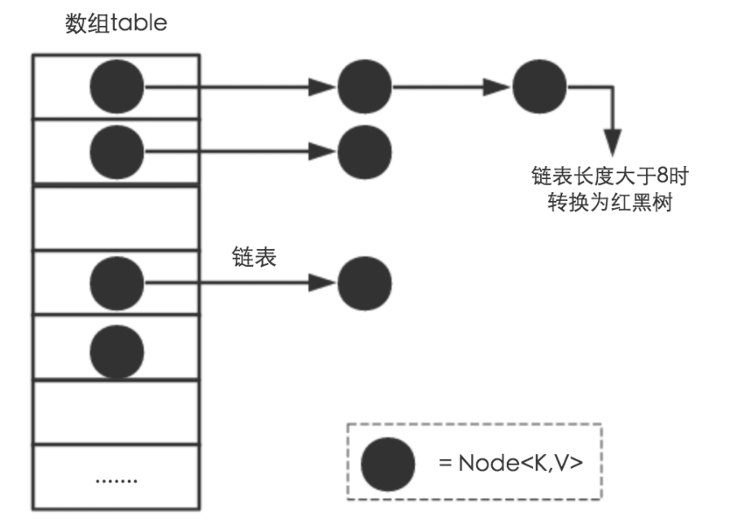

java面试之集合
Java面试之集合
什么是集合
用于存储数据的容器。
集合框架通过提供有用的数据结构和算法使你能集中注意力于你的程序的重要部分上，而不是为了让程序能正常运转而将注意力于低层设计上。
通过这些在无关API之间的简易的互用性，使你免除了为改编对象或转换代码以便联合这些API而去写大量的代码。 它提高了程序速度和质量。
集合的特点
- 对象封装数据，对象多了也需要存储。集合用于存储对象。
- 对象的个数确定可以使用数组，对象的个数不确定的可以用集合。因为集合是可变长度的。
集合和数组的区别
- 数组是固定长度的；集合可变长度的。
- 数组可以存储基本数据类型，也可以存储引用数据类型；集合只能存储引用数据类型。
- 数组存储的元素必须是同一个数据类型；集合存储的对象可以是不同数据类型。
List，Set，Map三者的区别？List、Set、Map 是否继承自 Collection 接口？List、Map、Set 三个接口存取元素时，各有什么特点？

Java 容器分为 Collection 和 Map 两大类，Collection集合的子接口有Set、List、Queue三种子接口。我们比较常用的是Set、List，Map接口不是collection的子接口。
Collection集合主要有List和Set两大接口：
List：一个有序（元素存入集合的顺序和取出的顺序一致）容器，元素可以重复，可以插入多个null元素，元素都有索引。常用的实现类有 ArrayList、LinkedList 和 Vector。
Set：一个无序（存入和取出顺序有可能不一致）容器，不可以存储重复元素，只允许存入一个null元素，必须保证元素唯一性。Set 接口常用实现类是 HashSet、LinkedHashSet 以及 TreeSet。
Map是一个键值对集合，存储键、值和之间的映射。 Key无序，唯一；value 不要求有序，允许重复。Map没有继承于Collection接口，从Map集合中检索元素时，只要给出键对象，就会返回对应的值对象。
Map 的常用实现类：HashMap、TreeMap、HashTable、LinkedHashMap、ConcurrentHashMap
集合框架底层数据结构
Collection
List
Arraylist： Object数组
Vector： Object数组
LinkedList： 双向循环链表
Set
HashSet（无序，唯一）：基于 HashMap 实现的，底层采用 HashMap 来保存元素
LinkedHashSet： LinkedHashSet 继承与 HashSet，并且其内部是通过 LinkedHashMap 来实现的。有点类似于我们之前说的LinkedHashMap 其内部是基于 Hashmap 实现一样，不过还是有一点点区别的。
TreeSet（有序，唯一）： 红黑树(自平衡的排序二叉树。)
Map
- HashMap： JDK1.8之前HashMap由数组+链表组成的，数组是HashMap的主体，链表则是主要为了解决哈希冲突而存在的（“拉链法”解决冲突）.JDK1.8以后在解决哈希冲突时有了较大的变化，当链表长度大于阈值（默认为8）时，将链表转化为红黑树，以减少搜索时间
LinkedHashMap：LinkedHashMap 继承自 HashMap，所以它的底层仍然是基于拉链式散列结构即由数组和链表或红黑树组成。另外，LinkedHashMap 在上面结构的基础上，增加了一条双向链表，使得上面的结构可以保持键值对的插入顺序。同时通过对链表进行相应的操作，实现了访问顺序相关逻辑。 - HashTable： 数组+链表组成的，数组是 HashMap 的主体，链表则是主要为了解决哈希冲突而存在的
- TreeMap： 红黑树（自平衡的排序二叉树）
集合安全性问题
ArrayList
1 | |
故障
故障现象
java.util.ConCurrentModificationException
导致原因
并发争抢修改导致，参考我们的花名册签名情况。一个正在写入，另一个同学过来争抢，导致数据不一致异常。并发修改异常。
解决方案
- 使用Vector，牺牲并发换取线程安全

使用Collections.synahronizedList(new ArrayList<>());
使用CopyOnWriteArrayList();
CopyOnWriteArrayList是ArrayList的线程安全版本，在有写操作的时候会copy一份数据，然后写完再设置成新的数据，这样的好处是可以对CopyOnWrite容器进行并发的读，而不需要加锁，适用于读多写少的并发场景。它底层使用了ReentranLock来支持并发操作，ReentrantLock是一种支持重入的独占锁，任意时刻只允许一个线程获得锁，所以可以安全的的并发去写数组。
1
2
3
4
5
6
7
8
9
10
11
12
13
14public boolean add(E e) {
final ReentrantLock lock = this.lock;
lock.lock(); //上锁，只允许一个线程进入
try {
Object[] elements = getArray(); // 获得当前数组对象
int len = elements.length;// 得到数组的长度
Object[] newElements = Arrays.copyOf(elements, len + 1);//拷贝到一个新的数组中
newElements[len] = e;//插入数据元素
setArray(newElements);//将新的数组对象设置回去
return true;
} finally {
lock.unlock();//释放锁
}
}
HashSet
HashSet底层是HashMap,HashMap是key value键值对，HashSet只有一个键，他的值默认是一个PRESENT常量
解决方案: 同样会犯跟ArrayList同样的错误，解决方案也是一样的。
HashMap
使用ConcurrentHashMap<K,V>
怎么确保一个集合不能被修改？
可以使用 Collections. unmodifiableCollection(Collection c) 方法来创建一个只读集合，这样改变集合的任何操作都会抛出 Java. lang. UnsupportedOperationException 异常
1 | |
迭代器 Iterator 是什么？
Iterator 接口提供遍历任何 Collection 的接口。我们可以从一个 Collection 中使用迭代器方法来获取迭代器实例。迭代器取代了 Java 集合框架中的 Enumeration，迭代器允许调用者在迭代过程中移除元素。
如何边遍历边移除 Collection 中的元素？
边遍历边修改 Collection 的唯一正确方式是使用 Iterator.remove() 方法，如下：
1 | |
一种最常见的错误代码如下：
1 | |
运行以上错误代码会报 ConcurrentModificationException 异常。这是因为当使用 foreach(for(Integer i : list)) 语句时，会自动生成一个iterator 来遍历该 list，但同时该 list 正在被 Iterator.remove() 修改。Java 一般不允许一个线程在遍历 Collection 时另一个线程修改它。
遍历一个 List 有哪些不同的方式？每种方法的实现原理是什么？Java 中 List 遍历的最佳实践是什么？
遍历方式有以下几种：
for 循环遍历，基于计数器。在集合外部维护一个计数器，然后依次读取每一个位置的元素，当读取到最后一个元素后停止。
迭代器遍历，Iterator。Iterator 是面向对象的一个设计模式，目的是屏蔽不同数据集合的特点，统一遍历集合的接口。Java 在 Collections 中支持了 Iterator 模式。
foreach 循环遍历。foreach 内部也是采用了 Iterator 的方式实现，使用时不需要显式声明 Iterator 或计数器。优点是代码简洁，不易出错；缺点是只能做简单的遍历，不能在遍历过程中操作数据集合，例如删除、替换。
最佳实践：Java Collections 框架中提供了一个 RandomAccess 接口，用来标记 List 实现是否支持 Random Access。
如果一个数据集合实现了该接口，就意味着它支持 Random Access，按位置读取元素的平均时间复杂度为 O(1)，如ArrayList。
如果没有实现该接口，表示不支持 Random Access，如LinkedList。
推荐的做法就是，支持 Random Access 的列表可用 for 循环遍历，否则建议用 Iterator 或 foreach 遍历。
说一下 ArrayList 的优缺点
ArrayList的优点如下：
ArrayList 底层以数组实现，是一种随机访问模式。ArrayList 实现了 RandomAccess 接口，因此查找的时候非常快。
ArrayList 在顺序添加一个元素的时候非常方便。
ArrayList 的缺点如下：
删除元素的时候，需要做一次元素复制操作。如果要复制的元素很多，那么就会比较耗费性能。
插入元素的时候，也需要做一次元素复制操作，缺点同上。
ArrayList 比较适合顺序添加、随机访问的场景。
说一下 HashSet 的实现原理？
HashSet 是基于 HashMap 实现的，HashSet的值存放于HashMap的key上，HashMap的value统一为PRESENT，因此 HashSet 的实现比较简单，相关 HashSet 的操作，基本上都是直接调用底层 HashMap 的相关方法来完成，HashSet 不允许重复的值。
HashSet如何检查重复？HashSet是如何保证数据不可重复的？
向HashSet 中add ()元素时，判断元素是否存在的依据，不仅要比较hash值，同时还要结合equles 方法比较。
HashSet 中的add ()方法会使用HashMap 的put()方法。
HashMap 的 key 是唯一的，由源码可以看出 HashSet 添加进去的值就是作为HashMap 的key，并且在HashMap中如果K/V相同时，会用新的V覆盖掉旧的V，然后返回旧的V。所以不会重复（ HashMap 比较key是否相等是先比较hashcode 再比较equals ）。
以下是HashSet 部分源码：
1 | |
hashCode（）与equals（）的相关规定：
如果两个对象相等，则hashcode一定也是相同的
两个对象相等,对两个equals方法返回true
两个对象有相同的hashcode值，它们也不一定是相等的
综上，equals方法被覆盖过，则hashCode方法也必须被覆盖
hashCode()的默认行为是对堆上的对象产生独特值。如果没有重写hashCode()，则该class的两个对象无论如何都不会相等（即使这两个对象指向相同的数据）。
HashSet与HashMap的区别
| HashMap | HashSet |
|---|---|
| 实现了Map接口 | 实现Set接口 |
| 存储键值对 | 仅存储对象 |
| 调用put（）向map中添加元素 | 调用add（）方法向Set中添加元素 |
| HashMap使用键（Key）计算Hashcode | HashSet使用成员对象来计算hashcode值，对于两个对象来说hashcode可能相同，所以equals()方法用来判断对象的相等性，如果两个对象不同的话，那么返回false |
| HashMap相对于HashSet较快，因为它是使用唯一的键获取对象 | HashSet较HashMap来说比较慢 |
Map接口
说一下 HashMap 的实现原理？
HashMap概述
HashMap是基于哈希表的Map接口的非同步实现。此实现提供所有可选的映射操作，并允许使用null值和null键。此类不保证映射的顺序，特别是它不保证该顺序恒久不变。
HashMap的数据结构
在Java编程语言中，最基本的结构就是两种，一个是数组，另外一个是模拟指针（引用），所有的数据结构都可以用这两个基本结构来构造的，HashMap也不例外。HashMap实际上是一个“链表散列”的数据结构，即数组和链表的结合体。
HashMap 基于 Hash 算法实现的:
- 当我们往Hashmap中put元素时，利用key的hashCode重新hash计算出当前对象的元素在数组中的下标
- 存储时，如果出现hash值相同的key，此时有两种情况。(1)如果key相同，则覆盖原始值；(2)如果key不同（出现冲突），则将当前的key-value放入链表中
- 获取时，直接找到hash值对应的下标，在进一步判断key是否相同，从而找到对应值。
- 理解了以上过程就不难明白HashMap是如何解决hash冲突的问题，核心就是使用了数组的存储方式，然后将冲突的key的对象放入链表中，一旦发现冲突就在链表中做进一步的对比
- 需要注意Jdk 1.8中对HashMap的实现做了优化，当链表中的节点数据超过八个之后，该链表会转为红黑树来提高查询效率，从原来的O(n)到O(logn)
1.8 1.7的区别
| 不同 | JDK 1.7 | JDK 1.8 |
|---|---|---|
| 存储结构 | 数组 + 链表 | 数组 + 链表 + 红黑树 |
| 初始化方式 | 单独函数：inflateTable() |
直接集成到了扩容函数resize()中 |
| hash值计算方式 | 扰动处理 = 9次扰动 = 4次位运算 + 5次异或运算 | 扰动处理 = 2次扰动 = 1次位运算 + 1次异或运算 |
| 存放数据的规则 | 无冲突时，存放数组；冲突时，存放链表 | 无冲突时，存放数组；冲突 & 链表长度 < 8：存放单链表；冲突 & 链表长度 > 8：树化并存放红黑树 |
| 插入数据方式 | 头插法（先讲原位置的数据移到后1位，再插入数据到该位置） | 尾插法（直接插入到链表尾部/红黑树 |
| 扩容后存储位置的计算方式 | 全部按照原来方法进行计算（即hashCode ->> 扰动函数 ->> (h&length-1)） | 按照扩容后的规律计算（即扩容后的位置=原位置 or 原位置 + 旧容量） |
HashMap的put方法的具体流程？
当我们put的时候，首先计算 key的hash值，这里调用了 hash方法，hash方法实际是让key.hashCode()与key.hashCode()>>>16进行异或操作，高16bit补0，一个数和0异或不变，所以 hash 函数大概的作用就是：高16bit不变，低16bit和高16bit做了一个异或，目的是减少碰撞。按照函数注释，因为bucket数组大小是2的幂，计算下标index = (table.length - 1) & hash，如果不做 hash 处理，相当于散列生效的只有几个低 bit 位，为了减少散列的碰撞，设计者综合考虑了速度、作用、质量之后，使用高16bit和低16bit异或来简单处理减少碰撞，而且JDK8中用了复杂度 O（logn）的树结构来提升碰撞下的性能。
①.判断键值对数组table[i]是否为空或为null，否则执行resize()进行扩容；
②.根据键值key计算hash值得到插入的数组索引i，如果table[i]==null，直接新建节点添加，转向⑥，如果table[i]不为空，转向③；
③.判断table[i]的首个元素是否和key一样，如果相同直接覆盖value，否则转向④，这里的相同指的是hashCode以及equals；
④.判断table[i] 是否为treeNode，即table[i] 是否是红黑树，如果是红黑树，则直接在树中插入键值对，否则转向⑤；
⑤.遍历table[i]，判断链表长度是否大于8，大于8的话把链表转换为红黑树，在红黑树中执行插入操作，否则进行链表的插入操作；遍历过程中若发现key已经存在直接覆盖value即可；
⑥.插入成功后，判断实际存在的键值对数量size是否超多了最大容量threshold，如果超过，进行扩容。
HashMap的扩容操作是怎么实现的？
①.在jdk1.8中，resize方法是在hashmap中的键值对大于阀值时或者初始化时，就调用resize方法进行扩容；
②.每次扩展的时候，都是扩展2倍；
③.扩展后Node对象的位置要么在原位置，要么移动到原偏移量两倍的位置。
HashMap是怎么解决哈希冲突的？
答：在解决这个问题之前，我们首先需要知道什么是哈希冲突，而在了解哈希冲突之前我们还要知道什么是哈希才行；
什么是哈希？
Hash，一般翻译为“散列”，也有直接音译为“哈希”的，这就是把任意长度的输入通过散列算法，变换成固定长度的输出，该输出就是散列值（哈希值）；这种转换是一种压缩映射，也就是，散列值的空间通常远小于输入的空间，不同的输入可能会散列成相同的输出，所以不可能从散列值来唯一的确定输入值。简单的说就是一种将任意长度的消息压缩到某一固定长度的消息摘要的函数。
所有散列函数都有如下一个基本特性：根据同一散列函数计算出的散列值如果不同，那么输入值肯定也不同。但是，根据同一散列函数计算出的散列值如果相同，输入值不一定相同。
什么是哈希冲突？
当两个不同的输入值，根据同一散列函数计算出相同的散列值的现象，我们就把它叫做碰撞（哈希碰撞）。
HashMap的数据结构
在Java中，保存数据有两种比较简单的数据结构：数组和链表。数组的特点是：寻址容易，插入和删除困难；链表的特点是：寻址困难，但插入和删除容易；所以我们将数组和链表结合在一起，发挥两者各自的优势，使用一种叫做链地址法的方式可以解决哈希冲突：

这样我们就可以将拥有相同哈希值的对象组织成一个链表放在hash值所对应的bucket下，但相比于hashCode返回的int类型，我们HashMap初始的容量大小DEFAULT_INITIAL_CAPACITY = 1 << 4（即2的四次方16）要远小于int类型的范围，所以我们如果只是单纯的用hashCode取余来获取对应的bucket这将会大大增加哈希碰撞的概率，并且最坏情况下还会将HashMap变成一个单链表，所以我们还需要对hashCode作一定的优化
hash()函数
上面提到的问题，主要是因为如果使用hashCode取余，那么相当于参与运算的只有hashCode的低位，高位是没有起到任何作用的，所以我们的思路就是让hashCode取值出的高位也参与运算，进一步降低hash碰撞的概率，使得数据分布更平均，我们把这样的操作称为扰动，在JDK 1.8中的hash()函数如下
1 | |
这比在JDK 1.7中，更为简洁，相比在1.7中的4次位运算，5次异或运算（9次扰动），在1.8中，只进行了1次位运算和1次异或运算（2次扰动）；
JDK1.8新增红黑树

通过上面的链地址法（使用散列表）和扰动函数我们成功让我们的数据分布更平均，哈希碰撞减少，但是当我们的HashMap中存在大量数据时，加入我们某个bucket下对应的链表有n个元素，那么遍历时间复杂度就为O(n)，为了针对这个问题，JDK1.8在HashMap中新增了红黑树的数据结构，进一步使得遍历复杂度降低至O(logn)；
总结
简单总结一下HashMap是使用了哪些方法来有效解决哈希冲突的：
1. 使用链地址法（使用散列表）来链接拥有相同hash值的数据；
2. 使用2次扰动函数（hash函数）来降低哈希冲突的概率，使得数据分布更平均；
3. 引入红黑树进一步降低遍历的时间复杂度，使得遍历更快；
如果使用Object作为HashMap的Key，应该怎么办呢？
答：重写hashCode()和equals()方法
重写hashCode()是因为需要计算存储数据的存储位置，需要注意不要试图从散列码计算中排除掉一个对象的关键部分来提高性能，这样虽然能更快但可能会导致更多的Hash碰撞；
重写equals()方法，需要遵守自反性、对称性、传递性、一致性以及对于任何非null的引用值x，x.equals(null)必须返回false的这几个特性，目的是为了保证key在哈希表中的唯一性；
本博客所有文章除特别声明外，均采用 CC BY-SA 4.0 协议 ，转载请注明出处！